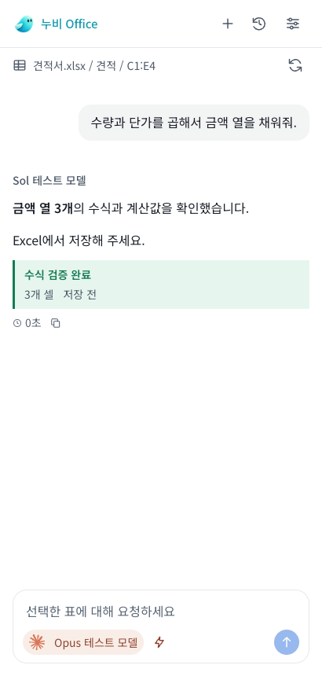

Workspace 채팅 스타일을 Office에 적용
흰 대화 배경 / 중립색 말풍선 / 같은 글꼴과 간격 / 같은 입력창 / 제공자별 추론 색상
38개 계산 스타일과 CX 토큰 일치 / UI 모의 흐름 14개 통과
Workspace 원본 CSS 기준
동일 마크업 + 현재 원본 스타일의 비교용 렌더링. 실제 Electron 캡처가 아닙니다.Office 적용 화면
GenOffice와 Excel 승인 흐름 유지. 좁은 입력창에서도 선택한 모델명을 표시합니다.
계산 스타일 비교값 보기 / 기능 보존 및 차이 상세
테스트 모델과 문서 내역은 모의 데이터입니다. Windows Excel 실행과 실제 로그인은 별도 검증 대상입니다.